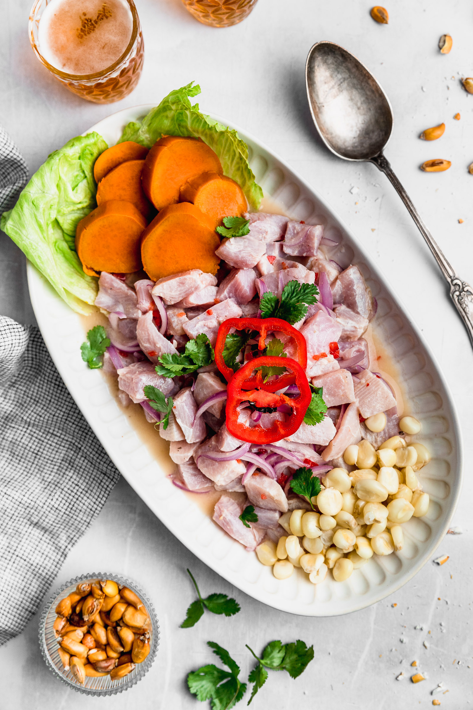

Home
Receta del Ceviche

Descripción
El ceviche es un plato frío a base de trozos de pescado fresco o mariscos marinados en jugo de limón, mezclados con cebolla roja, ají y sal
Tiene más de 2000 años de historia en la costa del Perú, evolucionando desde preparaciones prehispánicas hasta convertirse en el plato bandera del país.
Ingredientes:
- 500gr de pescado blanco fresco(corvina, merluza o perico).
- 10 limones sutiles(jugo recien exprimido).
- 1 cebolla morada, cortada en tiras finas(plumas).
- 1 aji limo picado en cuadritos finos.
- Culantro o cilantro fresco picado(al gusto).
- Media cucharada de Ajo molido
- Sal al gusto
- Acompañamientos: camote sancochado, choclo desgranado y cancha.
Pasos de preparación
- Retirar la piel y las espinas del pescado. Cortar en cubos medianos de 2cm.
- Cortar la cebolla en pluma y enguajala en agua con hielo para quitarle lo amargo y mantenerla crujiente.
- Colocar los trozos del pescado en un bol frio, agregar sal y mezcle suavemente.
- Incorporar el aji limo picado y el culantro fresco al pescado.
- Exprime los limones directamente sobre el pescado sin apretar demasiado para evitar amargor. Añade un cubo de hielo para mantener la temperatura baja.
- Mezcla por solo un minuto. Retire el hielo, incorpora la cebolla escurrida y sirve de inmediato acompañado de camote, choclo y cancha.